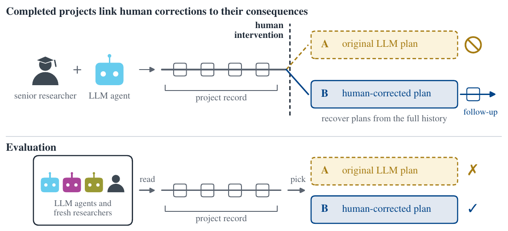
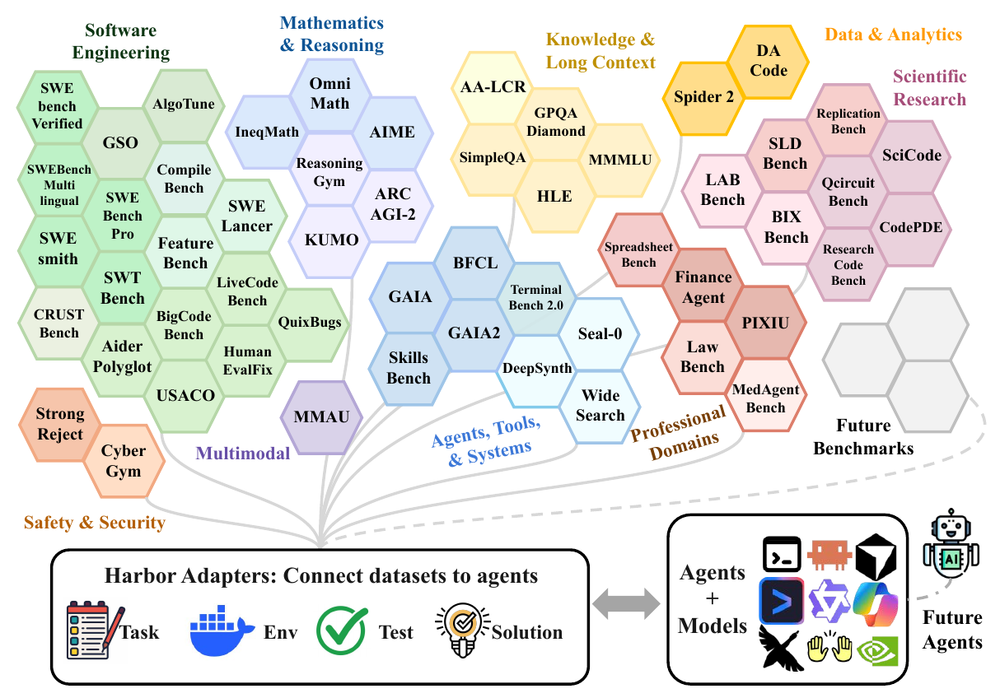
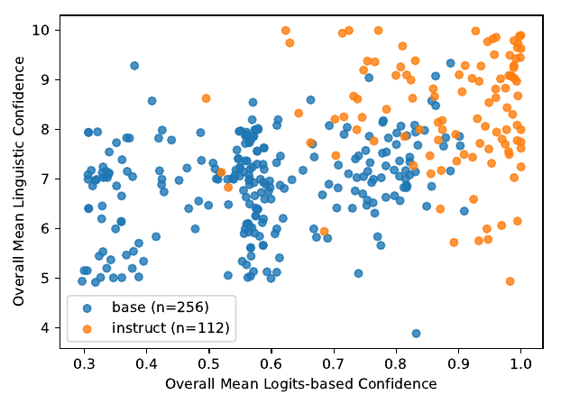
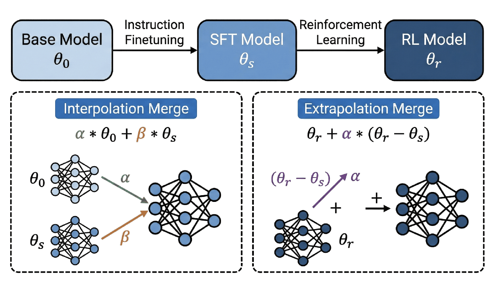
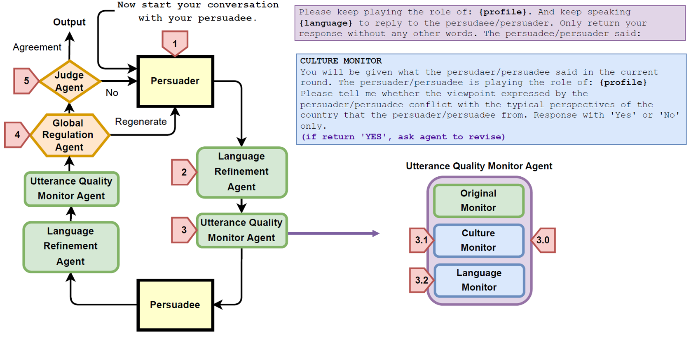
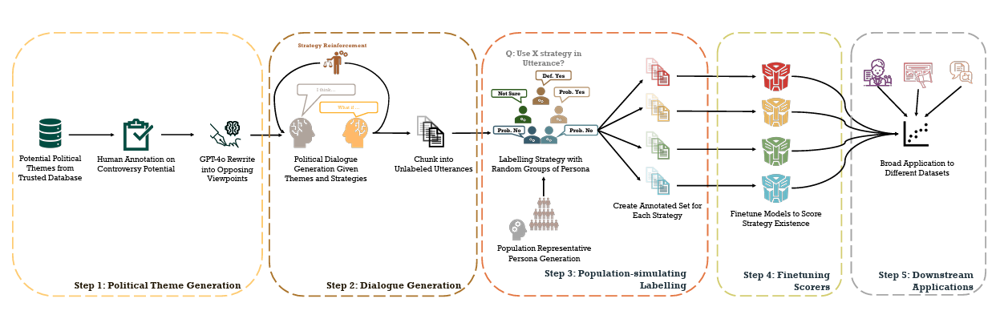
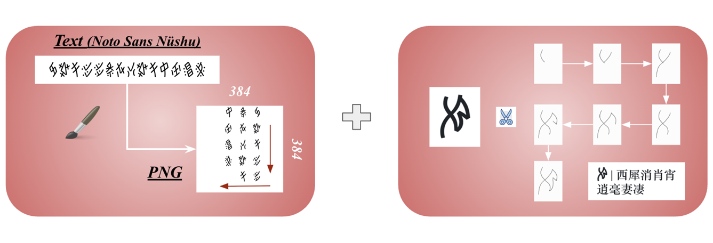
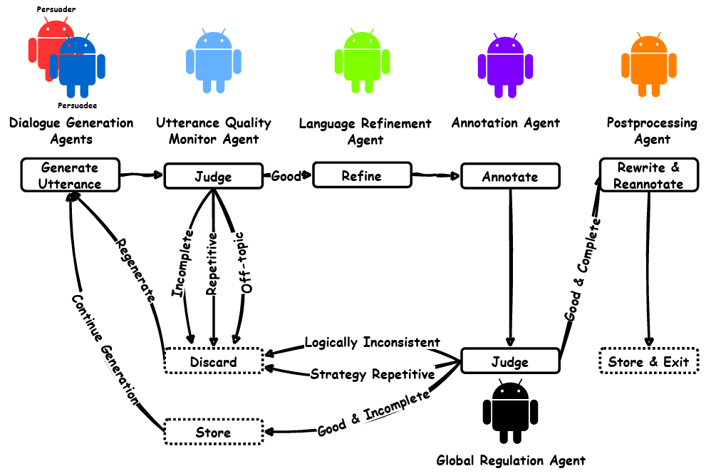
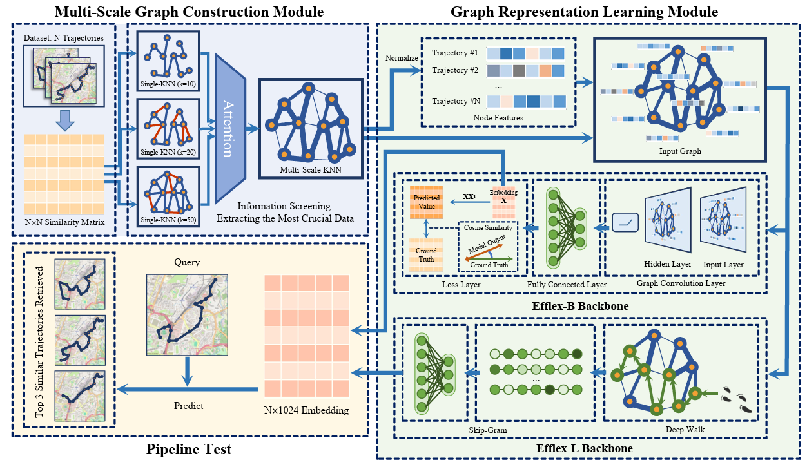
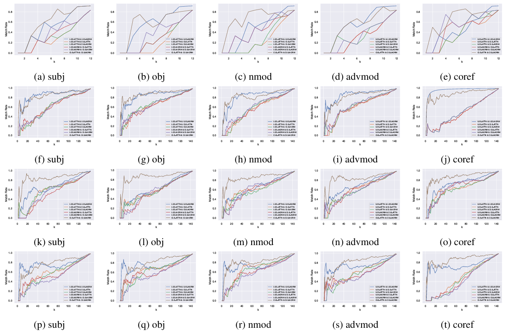

About
News
- Served as a reviewer for ICLR 2027.
- Our paper Harbor Adaptor was accepted to NeurIPS 2026!
- Our paper on uncertainty measurement was accepted to Findings of EMNLP 2026!
- Started a research internship at Meituan.
Experiences
Jun. 2026 – Sep. 2026
Meituan
Large Language Model Research Intern
Post-training LLM agents for long-horizon tool-use tasks.
Sep. 2023 – Present
Sep. 2018 – Jun. 2022
Shanghai Jiao Tong University (SJTU)
B.Eng. in Information Engineering
Minor in Applied Mathematics
Publications ( / )

SciΠvot: Benchmarking Principal-Investigator Judgment at Pivotal Moments of Scientific AutoResearch Agents
arXiv 2026

Harbor Adapters and Harbor-Index: Infrastructure and a Curated Meta-Dataset for Large-Scale Agentic Evaluation
NeurIPS 2026

When Linguistic and Internal Confidence Diverge in Large Language Models
EMNLP 2026 (findings)

The Pitfalls of Text Degeneration when Aligning LLMs through Model Merge
TMLR 2026

Enhancing LLM-Based Persuasion Simulations with Cultural and Speaker-Specific Information
EMNLP 2025 (findings)

A Generalizable Rhetorical Strategy Annotation Model Using LLM-based Debate Simulation and Labelling
EMNLP 2025 (findings)

Recontextualizing revitalization: A mixed media approach to reviving the nüshu language
EMNLP 2025 (main)

Communication Makes Perfect: Persuasion Dataset Construction via Multi-LLM Communication
NAACL 2025 (oral)

Efflex: Efficient and flexible pipeline for spatio-temporal trajectory graph modeling and representation learning
CVPR 2024 Workshops

Improving Syntactic Probing Correctness and Robustness with Control Tasks
ACL 2023 (main)